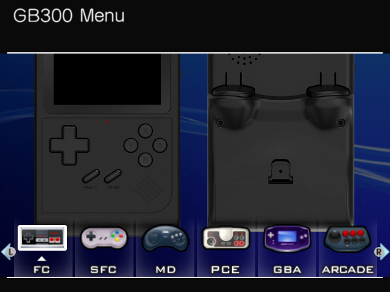
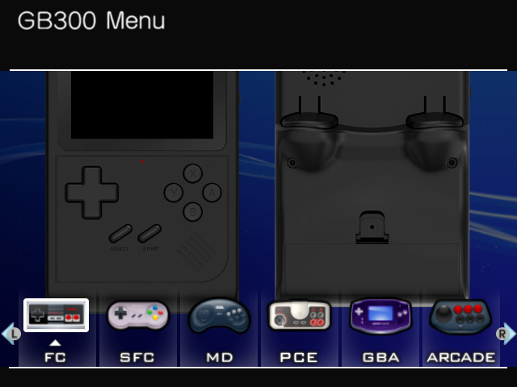

GB300 V2 Custom Themes
- ・How to install the theme
Simply unzip the downloaded theme ZIP file and overwrite it to the Resources folder on SD card.
*Please read the notes in the Readme.txt included in the theme ZIP file.
(Github)
https://github.com/Q-ta-s/GB300V2-Custom-Themes/releases/tag/latest


« Back
- 1. Wii menu like style theme
- 2. Wii menu like style theme
(without CRT TV-overlay) - 3. Wii menu like style Dark theme
- 4. Wii menu like style Dark theme
(without CRT TV-overlay)


・ (plugin) Wii style theme - Hyper Cube Game Menu
This is a plugin that changes the game selection list menu to a new interface. (* currently a testing release.)
[Installation Guide]:
| (Basical) | https://discord.com/channels/741895796315914271/1345670270819766313/1347588323790557285 |
| (Advanced) | https://discord.com/channels/741895796315914271/1345670270819766313/1347592021614788660 |


・(icon) Wii style theme - Icon Pack

- 5. RetroXMB
 

- 6. BLACK FRIDAY NIGHT Theme


« Back